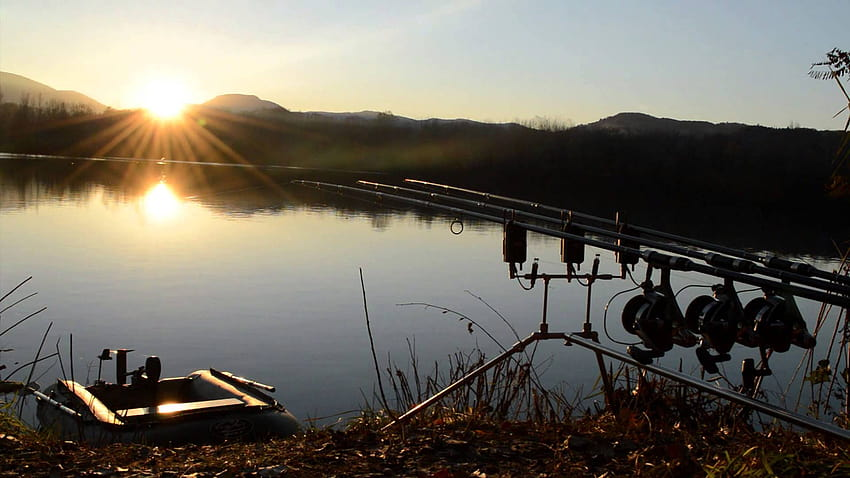

Method Feeder

Method feeder to popularna metoda wędkarska, w której używa się podajnika, aby przyciągnąć ryby w nasze łowisko. Do podajnika wsypuje się pellet, a na haczyku umieszcza przynętę, np. pellet czy waftersy. Pellet stopniowo uwalnia się w wodzie, przyciągając ryby w pobliże naszej przynęty. Metoda ta jest szczególnie skuteczna przy łowieniu ryb karpiowatych w jeziorach i rzekach.
Karpiarstwo
